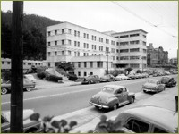
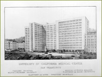
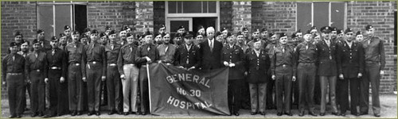
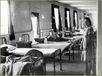
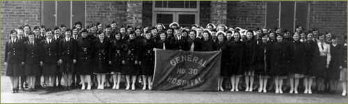

Wartime and New Opportunities

The quickening of the American economy that came with war in Europe and then Pearl Harbor began to alter the status quo at the San Francisco campus, and the first signs of change occurred at the state level. As early as 1937, while the nation was still in the grip of the Depression, Dean Langley Porter began a campaign to cooperate with the State Department of Mental Hygiene to build a psychiatric hospital on land belonging to the university at the Parnassus campus. State officials, concerned with indigents and migrants flocking to California, were persuaded that a state acute psychiatric hospital was necessary. Langley Porter Clinic, 1942
Dean Porter wisely proposed to operate the facility jointly with the state, thereby obtaining psychiatric teaching beds for the medical school. After long negotiations, the state and the UC Regents reached agreement, and a cornerstone was laid in 1941, a symbol, according to local observers, of "a new era of empathy and understanding of the mentally ill." In 1942 the Langley Porter Clinic, which would later become the Neuropsychiatric Institute, opened its new

facility: a 105,000 square foot building that contained 100 beds, a large outpatient department, and a special children's ward. The facility, built on university land, was owned by the California State Department of Mental Hygiene and the School of Medicine received 10% of the space. This symbiotic relationship with the state continued for the next thirty years, and the establishment of the Langley Porter Clinic led to the founding in 1941 of a Department of Psychiatry on the Parnassus campus. While Dean Porter was negotiating with the state over the psychiatric hospital, another ambitious group of San Francisco clinical faculty petitioned the state for money to build a modern teaching hospital at Parnassus. The state's response was definite: a $2 million bond issue was approved for this purpose in 1940 by Governor Earl Warren, although the war delayed construction for many years.
Architectural Drawing of Moffitt Hospital
Base Hospital 30 in World War II

The Medical School's leading physicians and surgeons reactivated Base Hospital #30, transforming it into the Thirtieth General Hospital. Hundreds of officers, nurses and enlisted men from the Medical faculty, and the Schools of Nursing, Pharmacy and Dentistry traveled to Europe to support American troops overseas, in England, and after the Normandy invasion in Europe.
The 30th General Hospital CA. 1942. Howard Naffziger (center front) is the tall man in a dark suit.
During the war, Medical School classes were accelerated and compressed from four full years into seven terms of sixteen weeks each, and the M.D. degree was granted before the year of internship. New curriculum was introduced reflecting the health problems of the war, and the remaining faculty and house staff worked overtime to fill the many vacancies in the teaching hospitals. Although the military again in World War II did not grant officer status to pharmacists, they were given first lieutenant status by the U. S. Public Health Service. The pharmacy curriculum was compressed into three “semesters” per year, so that the required eight full semesters of study could be completed in a little more than two years.

As the war dragged on, manpower needs were fulfilled through the Army and Navy War Service Training Programs in both the Medical School and College of Dentistry. Here students were matriculated into an accelerated course track and emerged with commissions as 2nd lieutenants or ensigns in the reserve corps, available for active duty as needed. Tuition, fees, and books were provided by contract between the University and the federal government. By 1944, 90 percent of the dentistry student body was enrolled in these programs, and civilian matriculants were accepted and deferred from selective service.
Ward at the 30th General Hosptal, June 1943.

Similarly, wartime nursing needs were met by huge enrollments, accelerated clinical training, and the Cadet Nurse corps administered by the U. S. Public Health Service. In 1944, a new Cadet nurses’ dorm to house eighty students was built with federal funds, near the Langley Porter Institute and the campus tennis courts. The Cadet program also funded additional graduate education for nurse teachers and public health nurses
Nurses at the 30th General Hospital, June 1943.
Such a massive effort in training personnel in the health professions consumed much of the efforts of college administrators on the home front, and when war ended, political issues that experienced a long hiatus reemerged in the complicated setting of the postwar years.
Leadership
Deans (Dentistry):
-
Willard C. Fleming (1939-1965)
Deans (Medicine):
-
R. Langley Porter (1939-1940)
-
Robert Gordon Sproul (1940-1942)
-
Francis S. Smyth (1942-1954)
-
John B. Lagen (acting) (1954-1956)
Deans (Nursing):
-
Margaret Tracy (1934-1956)
-
June Bailey (acting) (1956)
Deans (Pharmacy):
-
Troy Daniels (1944-1966)
>> Postwar Research Initiatives